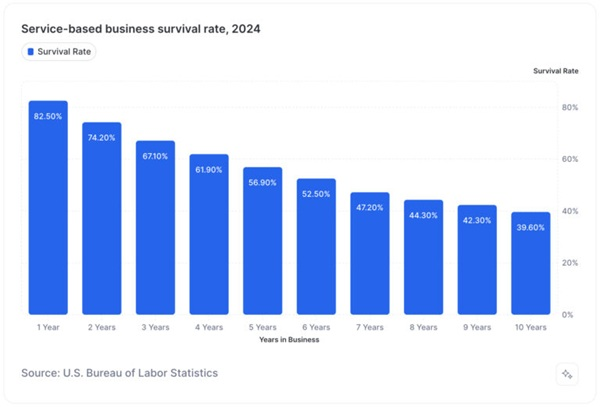

Pros
- Low Startup Costs
- High Profit Margins
- Flexibility & Scalability
- Income is limited to time worked
- Client Dependence
- Difficult to Automate
Service based businesses have a lot going for them, especially for first time entrepreneurs or freelancers. One of the biggest advantages is the low barrier to entry. You don’t need to invest in products, storage, or shipping just your skills, a way to reach clients, and the tools to do the job. This means you can get started quickly and with minimal upfront cost. Another plus is profit margin. Since you’re mostly selling your time, knowledge, or a skill set, your overhead tends to stay low. As a result, more of what you earn can go directly into your pocket. These types of businesses also offer a lot of flexibility. You can often choose your own schedule, work from anywhere, and scale at your own pace at least in the beginning. But there are trade offs. The biggest one is that your income is directly tied to your time. There’s only so much you can do in a day, so unless you find a way to scale by hiring help, offering group services, or turning your knowledge into digital products you’ll hit a ceiling. Client dependency can also be a real issue. If you rely heavily on just a few clients and one drops off, it can put your income at risk. There’s also the challenge of consistency. Unlike a product based business that can keep selling overnight, most service businesses require your active involvement. That makes it harder to take time off or grow without burning out. Plus, some services are tough to automate or delegate without sacrificing quality, especially if your brand is tied closely to your personal touch.


Recession resilience
Service based businesses can be hit or miss during a recession. On one hand, essential services like healthcare, repairs, or IT support tend to hold up well because people still need them. On the other hand, non essential or luxury services like personal coaching, design, or beauty treatments often see a drop in demand as customers cut back on spending. So, whether a service business is recession resilient really depends on what kind of service it offers and how necessary it is during tough times.Types of service based businesses
Service based businesses come in all shapes and sizes, but they usually fall into a few common types. Personal services are things like haircuts, fitness training, or pet grooming anything where you're helping individuals directly with their daily needs or lifestyle. Then there are professional services, which are usually offered by people with specialized knowledge or credentials, like accountants, consultants, or lawyers. These often support both individuals and other businesses. Home and maintenance services include things like plumbing, landscaping, and cleaning essential services that people rely on to keep their homes running smoothly. You also have creative and digital services, such as web design, photography, and freelance writing, which can often be done online and serve clients across different industries. Lastly, there are business to business (B2B) services, like IT support, marketing, or virtual assistance, which help other businesses operate more efficiently. Each of these types has its own challenges and opportunities, but they all share one thing in common: they focus on providing value through time, skills, or expertise instead of selling physical products.
Success rate of serviced based businesses
How can you start?
Starting a relatively simple service based business typically begins with identifying a skill you already have that meets a specific need such as cleaning, tutoring, graphic design, or pet care. From there, define your service offering clearly, and research your target market to understand local demand and pricing. Next take care of the basics choose a business name, register your business with the appropriate local or national authority, and secure any necessary licenses or permits. Set up a simple financial system, including a separate bank account and a way to track income and expenses. Once that’s done create a basic online presence this could be as simple as a one page website and a Google Business Profile so potential clients can find and contact you easily. Finally, start small, deliver consistently great service, and use customer feedback and word of mouth referrals to grow over time. Simple service businesses often have low startup costs and are easier to manage alone, making them ideal for new entrepreneurs.